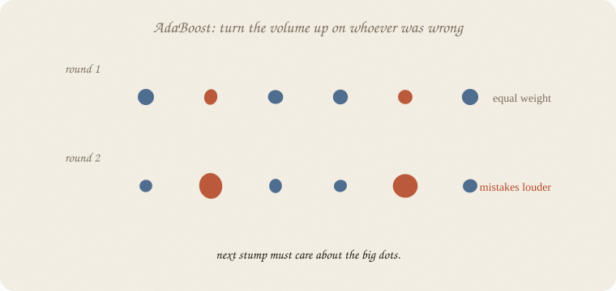
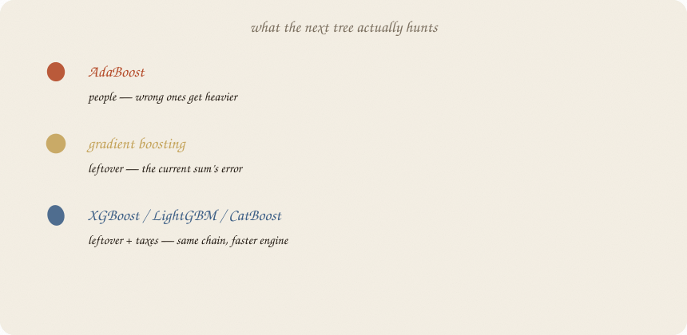

datazines · a sketchbook
Boosting flavors — a sketchbook

Read 03 gradient boosting first. That notebook is the religion. This one is the family portrait: AdaBoost vs gradient boosting vs the brand names, short enough to remember, not a second encyclopedia.
No extra AdaBoost sheet. No extra XGBoost sheet. This is the “what’s the difference” note.
Flip it like a notebook. One page = one idea. Done.
Page 1 — You do not need three religions
All of them: small trees in a line. Each new tree cares extra about what the last ones still get wrong. Then you add.
They disagree on what “wrong” looks like, and on how much extra machinery sits on the chain.
If you only keep one boosting notebook, keep 03 gradient boosting. Open this when a blog says AdaBoost, XGBoost, LightGBM, CatBoost as if they were different species.
Page 2 — AdaBoost: turn the volume up on the wrong people
Oldest dialect. Usually stumps (depth 1).
Round 1: every student weighs the same. Fit a stump.
Whoever was misclassified gets heavier. The next stump is scored as if those people were sitting in the room twice.

A stump that does well on the heavy dots gets a bigger say in the final weighted vote.
That is not “fit the residual number.” That is reweight the people. Same chain energy. Different leftover.
Page 3 — Gradient boosting: hunt the leftover number
03 gradient boosting again, in one line:
Current sum → leftover (the gradient of the loss) → plant a small tree on that leftover → add it quietly.
People do not change weight. The target of the next tree changes.

| dialect | the next tree hunts | typical brick | combine |
|---|---|---|---|
| AdaBoost | people (wrong ones louder) | stumps | weighted vote |
| gradient boosting | leftover of the sum | depth 2–3 | sum, shrunk |
| XGBoost / LightGBM / CatBoost | leftover + taxes | depth 2–8, fast | sum, shrunk, regularized |
XGBoost is gradient boosting with: second-order leftover (a bit more precise), penalties on tree size (ridge-ish), column samples (forest-ish), missing-value tricks, and a C++ engine. LightGBM: leaf-wise growth, histograms, speed on huge tables. CatBoost: categories without you inventing dummy columns.
Same religion as 03. Different garage.
Page 4 — Same pass/fail class, no brand worship
Stumps in a chain (AdaBoost) vs leftover-trees (GB) vs sklearn’s histogram engine (HistGradientBoosting — the closest thing here without installing XGBoost):
| train | test | |
|---|---|---|
| AdaBoost, 30 stumps, rate 0.5 | 0.911 | 0.875 |
| gradient boosting, 30 × depth 2, rate 0.1 | 0.964 | 0.750 |
| hist boosting, 30 × depth 2, rate 0.1 | 0.857 | 0.792 |
| forest (from 02), 100 trees | 1.000 | 0.792 |
On 24 test people, AdaBoost happened to win. That is a coin with 24 flips, not “AdaBoost is best.” The point of the table: brand ≠ ranking. Tiny n, any of them can look like a genius.
Install XGBoost later if you want the engine. Do not expect it to rewrite this table by magic.
Page 5 — Pros / cons, one glance
AdaBoost
Pays you: simple story (loud mistakes). Stumps you can still almost read. Few knobs.
Costs you: noisy labels get louder (the opposite of what you want). Weaker on messy probabilities. Old, not the default anymore.
Reach for it: teaching the chain; a tiny, clean yes/no.
Skip it: labels are dirty; you already live in XGBoost-land.
Gradient boosting (sklearn GBM)
Pays you: the leftover picture you already have. Fine on medium tables. One library.
Costs you: slower than the C++ engines. Easy to overfit if the rate is loud.
Reach for it: learning; datasets that fit in RAM; you don’t want another install.
Skip it: millions of rows (use an engine).
XGBoost / LightGBM / CatBoost
Pays you: speed, extra taxes, missing values, (CatBoost) categories. Often the production default for tables.
Costs you: more knobs, more ways to fool yourself. Not a new idea — 03 in a faster coat. LightGBM can over-grow if you don’t cap depth/leaves.
Reach for it: real tables, once you can explain leftover + learning rate.
Skip it: you cannot yet draw the chain on paper.
Page 6 — Mini recipe
- Can you explain leftover-trees? If not, stay in 03 gradient boosting.
- Need a story about loud people? AdaBoost, one paragraph, then move on.
- Need a model tonight on a medium CSV? sklearn GBM or a forest.
- Need speed / missings / categories on a real table? Pick one engine (XGBoost is the common default; CatBoost if the sheet is full of categories). Do not collect all three.
- Believe hidden people, not the logo.
If you keep only one thing:
AdaBoost reweights people. GB fits leftovers. XGBoost is GB with a gym membership.
Page 7 — Three dialects, in sklearn
Same pass/fail class as the boosting notebook — eighty students. No XGBoost install required: HistGradientBoostingClassifier is sklearn’s histogram engine (LightGBM-adjacent). AdaBoost uses stumps.
import numpy as np
from sklearn.model_selection import train_test_split
from sklearn.tree import DecisionTreeClassifier
from sklearn.ensemble import (
AdaBoostClassifier,
GradientBoostingClassifier,
HistGradientBoostingClassifier,
)
rng = np.random.default_rng(7)
n = 80
hours = rng.uniform(1, 6, n)
sleep = rng.uniform(4, 9, n)
tutor = (rng.random(n) > 0.6).astype(float)
z = -3.2 + 1.05 * hours + 0.25 * (sleep - 6.5) + 0.7 * tutor
passed = (rng.random(n) < 1 / (1 + np.exp(-z))).astype(int)
X = np.column_stack([hours, sleep, tutor])
Xtr, Xte, ytr, yte = train_test_split(X, passed, test_size=0.3, random_state=0)
ada = AdaBoostClassifier(
estimator=DecisionTreeClassifier(max_depth=1, random_state=7),
n_estimators=30, learning_rate=0.5, random_state=7,
).fit(Xtr, ytr)
gb = GradientBoostingClassifier(
n_estimators=30, learning_rate=0.1, max_depth=2, random_state=7,
).fit(Xtr, ytr)
hist = HistGradientBoostingClassifier(
max_iter=30, learning_rate=0.1, max_depth=2, random_state=7,
).fit(Xtr, ytr)
print("ada ", round(ada.score(Xtr, ytr), 3), round(ada.score(Xte, yte), 3))
print("gb ", round(gb.score(Xtr, ytr), 3), round(gb.score(Xte, yte), 3))
print("hist ", round(hist.score(Xtr, ytr), 3), round(hist.score(Xte, yte), 3))
ada 0.911 0.875
gb 0.964 0.75
hist 0.857 0.792
AdaBoost luckiest on this split. Hist ≈ forest territory. GB hungrier on train. Do not pick a career from 24 test rows. The snippet is so you have seen all three calls.
HistGradientBoosting uses max_iter for “how many trees,” same job as n_estimators.
Last page — cheat sheet
| name | hunts | brick | vibe |
|---|---|---|---|
| AdaBoost | heavy people | stumps | old, readable, noisy-label-shy |
| gradient boosting | leftover | small trees | the idea in 03 |
| XGBoost | leftover + taxes | small/medium trees | default engine |
| LightGBM | leftover + taxes | leaf-wise, histograms | huge tables |
| CatBoost | leftover + taxes | ordered categories | messy categoricals |
Use / skip
Reach for it when
- someone names a brand and you need the dialect in one page
Skip it when
- you wanted a 12-page AdaBoost and a 12-page XGBoost
- you are not tuning one of them for real yet
Pays you: a map. Ada vs leftover vs engine.
Costs you: none of these beats a forest by law on tiny n. Chain first, logo later.
Family portrait, not a third religion. The chain: 03 gradient boosting. The choir: 02 random forest.
Flip it like a notebook. One page = one idea.